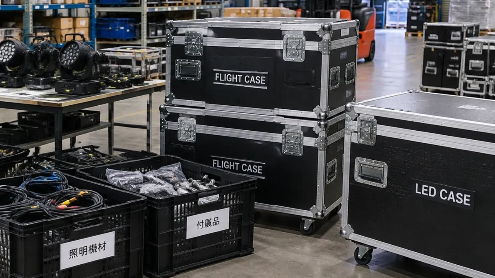
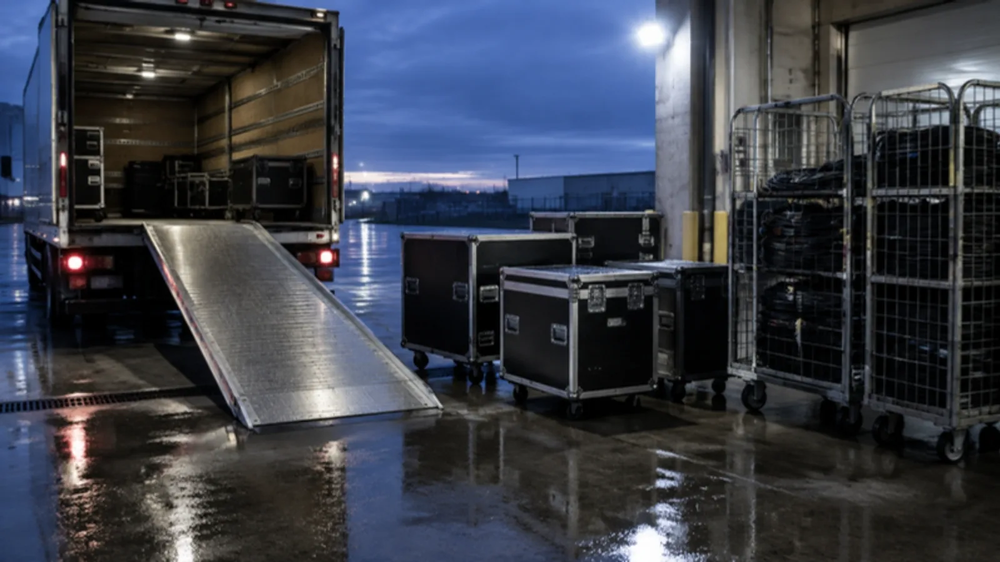
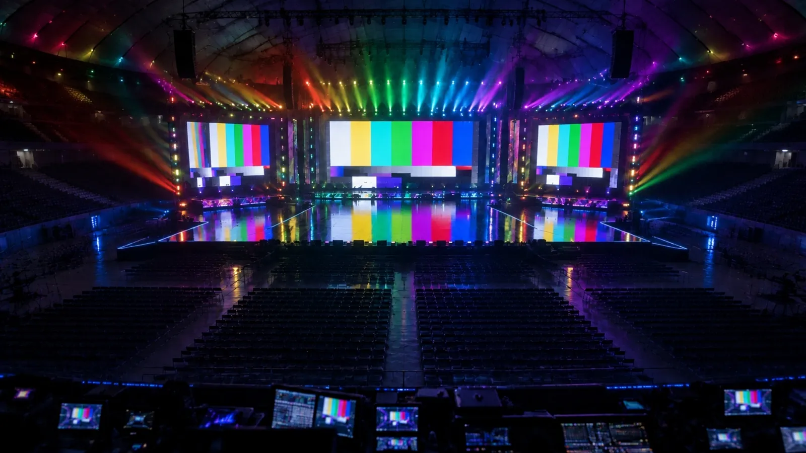
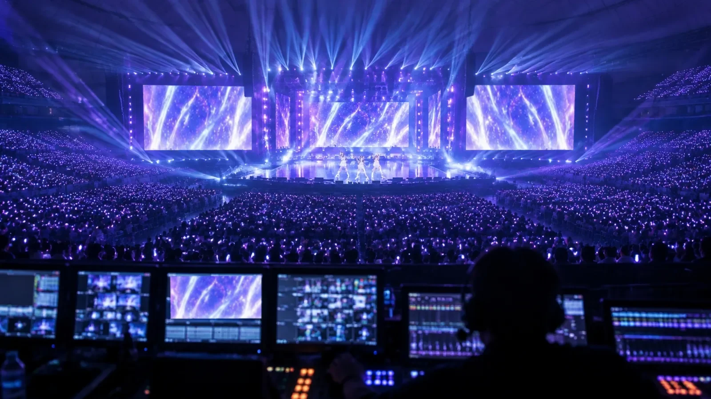
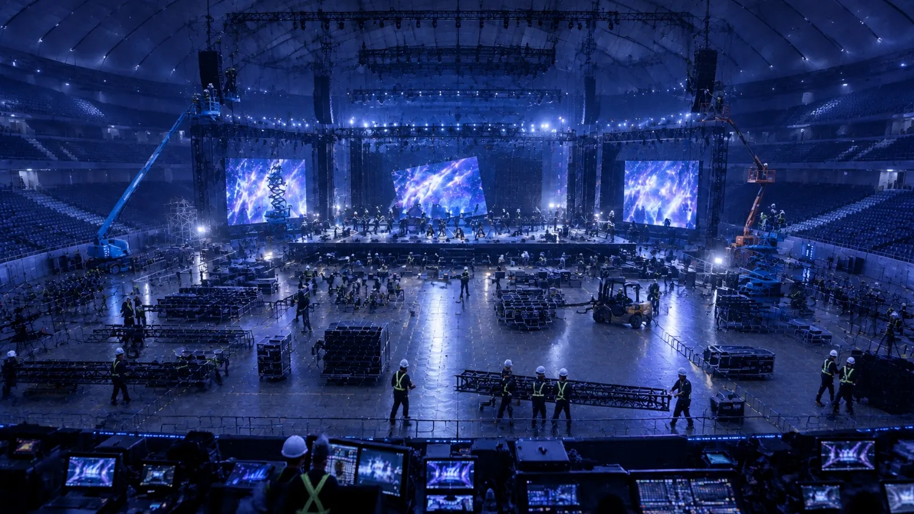
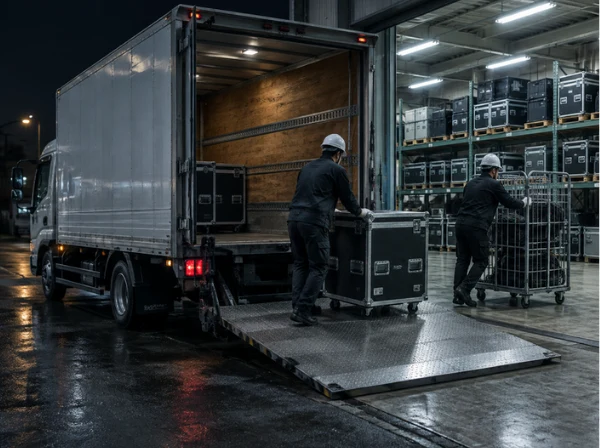

映像機材のオペレーションとライブ会場の設営。業界の花形ポジションの技術が、まるごと身につきます。
ホーム / 採用情報
RECRUIT — LOTUS VISUAL
客席から見ていた光を、
今度は、組む側で。
ライブ・ツアー・大型イベントの映像設営スタッフを募集しています。LED ビジョンを組み、映像を出し、本番を支えて、片付けて帰る。映像の現場がまったく初めてでも、先輩ディレクターが細かく指示を出すので大丈夫です。
01 — WHY LOTUS VISUAL花形の現場で、
01手に職がつく
02豊富な機材で学べる
03対等に意見を言える
04独立という道も
花形の現場で、
一生ものの手に職を。
有名アーティストのライブ会場やイベントの設営に、チームの一員として入ります。覚えた技術は、どの会場でも、どの時代でも使えます。
LED ビジョン、プロジェクター、スイッチャー、伝送機器。たくさんの機材に囲まれて、触りながら覚えられます。
知識を身につければ、立場に関係なく意見を言い合えます。髪型も自由。休日は場合により選べます。
社員として働くのも、個人事業主として独立するのも選べます。LOTUS VISUAL の案件を外注で受けることもできます。
02 — A DAY ON SITE現場の 1 日は、
STEP 1倉庫で準備 STEP 2積み込み・搬入 STEP 3仕込み STEP 4ゲネ・本番 STEP 5バラシ STEP 6帰庫
現場の 1 日は、
倉庫から始まる。
お客さまが見るのは本番の 2〜3 時間。その前後に、映像チームの長い 1 日があります。

リストを見ながら、ケースの中身を 1 つずつ確認。ここでの抜けは、現場では取り返せません。

重たいケースは 2 人以上で、台車で。トラックに積む順番は、会場で降ろす順番の逆です。

LED を組んで、配線して、テスト映像を出す。色やつなぎ目のズレをここで全部つぶします。

本番と同じ流れで通して、いよいよ開演。映像卓のうしろで、客席の歓声を背中で聞くことになります。

終演後、組んだものを安全に、速く片付けます。チームの息が一番そろう時間です。

機材を倉庫に戻して、次の現場へ。地方の会場なら出張に。交通費・宿泊費は会社持ちです。
03 — 1-YEAR PROJECT1 年教育プロジェクト。
1 年教育プロジェクト。
未経験から、現場を仕切る人へ。
何も分からない状態から始めても、3 つのステップで現場チーフを目指せます。あなたのやる気を、お金に変える仕組みです。
- 3〜6 か月STEP 1 機材研修・現場研修
大型テクニカルセンターでの丁寧な研修と、現場での実技研修。機材の名前と扱い方を、手で覚えます。
- 6〜12 か月STEP 2 現場
大型イベントやコンサートツアーに、先輩と同行します。現場の流れと、チームでの動き方を身につけます。
- 12 か月〜STEP 3 現場チーフ
現場を仕切る立場へ。1 年でのスピード出世もできます。
正社員の月給27.5万円〜
現場チーフの月給の例50万円
年収の目安(時間外 40 時間相当分を含む)340〜700万円
04 — GAMELED 配線ゲーム。
LED 配線ゲーム。
会議室から、ドーム本番へ。
大きな LED ビジョンは、何十枚ものパネルの集まり。映像の信号はプロセッサーの出力(IN)からパネルを 1 枚ずつ数珠つなぎに流れ、1 系統でつなげる枚数には上限があります。柱や吊り点を避けて、どの IN でどこまで受け持つか。9 つの会場を、星 3 つで制覇してください。
あなたの称号見習い★ 0 / 27
STAGE 1
遊び方
- 光っている線の先端から、上下左右のとなりのパネルへ指でなぞる(タップでも OK)。
- IN が複数あるステージでは、上の IN ボタンか IN のパネルを押して系統を切り替え。
- 1 系統は決められた枚数まで。超えそうなら別の IN から回す。
- 線の途中を押すと、そこまでケーブルを抜き直せます。
- 全パネルがつながると映像が流れてクリア。速いほど星が増え、次の会場が解放されます。
05 — QUIZ現場のことば、
現場のことば、
いくつ分かる?
全部分からなくて当たり前。入社した日から、毎日耳にすることばです。
Q1正解 0
06 — READ5 分で読める、
READ 01 ・ 知ってた?
READ 02 ・ 裏側
READ 03 ・ ホントのところ
READ 04 ・ これから入る人へ
5 分で読める、
映像の現場の話。
知っていると、ライブの見え方がちょっと変わる話を集めました。
READ 01 ・ 知ってた?ライブの大画面は、
じつは「タイル貼り」だった。
あの巨大な画面、1 枚の大きなテレビではありません。
続きを読む ↓
じつは「タイル貼り」だった。
ステージの後ろにそびえる LED ビジョン。あれは、50cm 角ほどのパネルを、タイルのように何十枚も並べて作っています。たとえば横 6m・縦 3m の画面なら、50cm のパネルが横に 12 枚、縦に 6 枚で、ちょうど 72 枚。
しかもパネル 1 枚は、機種によっては 8kg を超えます。72 枚なら、それだけで 600kg 近く。これを吊ったり積んだりして、1 ミリのズレもなく並べるのが映像チームの仕事です。
つなぎ目が見えない画面は、誰かが目を凝らして、何十枚もの継ぎ目を 1 つずつ合わせた結果なんです。
次にライブで大画面を見たら、継ぎ目を探してみてください。見つからなければ、それがプロの仕事です。
READ 02 ・ 裏側客席が暗くなる 5 分前、
映像チームは何を見ているか。
開演直前の映像卓は、意外なほど静かです。
続きを読む ↓
映像チームは何を見ているか。
開演 5 分前。客席はざわざわしているのに、映像卓のまわりは静かです。みんな、画面を見ています。
確かめているのは、映像がちゃんと出ているか、予備の系統に切り替えられるか、インカムの声がちゃんと届くか。本番中に何かあっても、お客さまに気づかれないうちに戻せるように、準備はすべてこの瞬間のためにあります。
そして暗転。1 曲目のイントロと同時に、自分たちが組んだ画面に光が入る。この瞬間のために、朝から倉庫で、会場で、汗をかいてきたんです。
この数秒の鳥肌が忘れられなくて、この仕事を続けている人がたくさんいます。
READ 03 ・ ホントのところ「体力勝負でしょ?」の
ウソとホント。
半分ホントで、半分ウソです。
続きを読む ↓
ウソとホント。
ホントの部分。現場は立ち仕事で、搬入も撤去もあります。体を動かすのが好きな人には向いています。
ウソの部分。重たいものを 1 人で持つことはありません。ケースには車輪がついていて、台車を使い、2 人以上で運びます。白いヘルメットをかぶって、安全第一で動きます。
本当に大事なのは、力より段取りです。どの順番で積めば、会場で早く降ろせるか。どこにケーブルを通せば、お客さまの導線をふさがないか。考えて動ける人が、いちばん頼りにされます。
求められるのは筋肉より、「次に何が起きるか」を考える頭です。
READ 04 ・ これから入る人へ未経験から 1 年。
最初の 3 か月で差がつくこと。
特別な才能はいりません。でも、コツはあります。
続きを読む ↓
最初の 3 か月で差がつくこと。
最初の 3 か月は、機材研修と現場研修の期間です。ここで覚えることは、じつはシンプルです。
1 つ目は、機材の名前と、どのケースに何が入っているか。現場で「あれ取って」と言われたとき、迷わず取りに行けるだけで、チームの一員になれます。
2 つ目は、先輩の動きを見ること。指示を待つだけでなく、先輩が次に何をしようとしているかを想像する。これが STEP 3 の「現場を仕切る」力につながっていきます。
1 年後、今度はあなたが「あれ取って」と言う側になります。
07 — FILMS映像で見る、
現場のスタッフと LED設営から本番まで、チームで組み上げる流れ。 扱う機材入社後に触れる LED ビジョンのラインナップ。
映像で見る、
LOTUS VISUAL の現場。
08 — JOB DETAIL
募集要項
- 職種
- ライブ・ツアーの映像設営スタッフ(経験者・未経験者とも歓迎)
- 仕事内容
- 映像機材のオペレーション業務/ライブや大型イベントの設営業務/各種管理・調整業務当社独自のプロジェクトに必要な映像現場業務のほか、他の企業様から受注したライブ会場やイベントの設営など。様々な有名アーティストのイベントに携わっていただきます。
- 雇用形態
- 正社員(試用期間 3 か月・期間中も同条件)個人事業主として外注で関わることも可能です(外務員日当 15,000 円〜、現場チーフの例 35,000 円)。
- 給与
- 月給 275,000 円〜300,000 円固定残業代あり:月給には 1 か月あたりの固定残業代 65,300 円〜80,000 円(40 時間相当分)を含みます。40 時間を超える残業代は追加で支給します。残業がない場合、手当は対象外。年間基本給 320 万〜700 万円 + 時間外 40 時間相当分 = 340 万〜700 万円。金額は経験・能力を考慮のうえ当社規定により決定します。現場チーフの例 月 50 万円。
- 賞与・昇給
- 賞与 年 1〜2 回(当社規定)/昇給あり
- 勤務形態
- 固定時間制・フレックスタイム制度・シフト制平均所定労働時間(1 か月あたり)170 時間
- 休日・休暇
- シフト制 月 8 日以上/年間休日 120 日以上
- 勤務地
- 東京都荒川区町屋 6-3-4 7F国内出張あり(交通費・宿泊費は支給)
- アクセス
- 南千住駅(JR 東日本・東京メトロ・つくばエクスプレス)/車通勤 OK
- 応募資格
- 高等学校卒業以上テレビ・芸能・イベント業界の仕事を楽しみながら働ける方/即実行する判断力・実行力のある方/時間などのコンプライアンスを守れる方
- 待遇・福利厚生
- 交通費支給/昇給制度あり/各種資格取得の補填あり/社会保険(雇用保険・労災保険・健康保険・厚生年金)
- その他
- 勤務開始日は相談 OK/リモート面接 OK/髪型自由
求人票(Indeed 掲載)の内容をもとに掲載しています。条件の詳細は面接でご確認ください。
09 — Q&A
よくある質問
映像の現場がまったく初めてでも大丈夫?
大丈夫です。今回は、映像の現場が未経験の方を広く募集しています。先輩ディレクターが細かく指示を出し、STEP 1 の研修(3〜6 か月)から始めます。
体力に自信がありません。
体力があれば大丈夫、という程度です。重たいものは 1 人で持ちません。台車とチームで運びます。
髪型や服装の決まりは?
髪型は自由です。現場では安全のため、白いヘルメットなどの装備を身につけます。
将来、独立することはできますか?
できます。個人事業主として独立し、LOTUS VISUAL の案件を外注で受けていただくことも可能です。
面接はどこで受けられますか?
リモート面接も OK です。勤務開始日もご相談ください。
10 — ENTRYまずは話を
まずは話を
聞くだけでも。
応募はもちろん、「見学してみたい」「話を聞いてから決めたい」も歓迎です。右のフォームに入力すると、内容入りのメールが作られます。